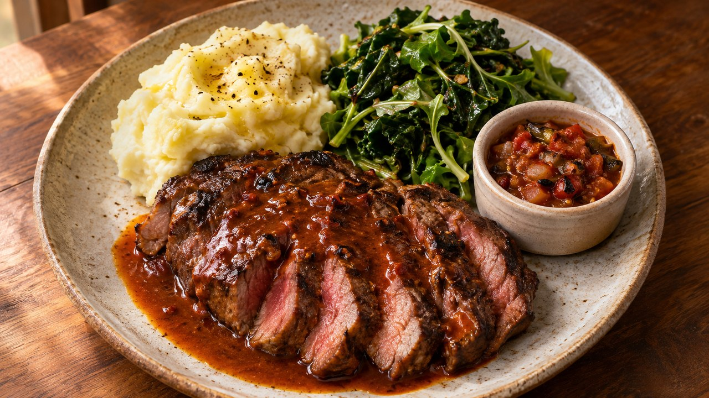

Mexican-inspired · Dinner · Serves 3 · About 40 minutes
Seared Steak with Pasilla Pan Sauce and Garden Greens

Ingredient amounts are estimates when scaled. AnyList imports the original quantities.
Ingredients
- 1 1/4 lb beef steaks
- 1 1/2 lb Yukon Gold potatoes, peeled if desired and chopped
- 3 Tbsp unsalted butter, divided
- 1/3 cup milk, warmed
- 2 Tbsp neutral oil, divided
- 1/3 cup salsa pasilla
- 1/4 cup low-sodium beef broth or water
- 2 garlic cloves, minced
- 1 bunch mustard greens, tough stems removed and leaves chopped
- 2 cups arugula
- 1/4 cup salsa tatemada, for serving
- Kosher salt and black pepper, to taste
Instructions
- Cover the potatoes with salted water and boil until fork-tender. Drain and mash with the warm milk and 2 Tbsp butter. Season to taste and cover to keep warm.
- Heat 1 Tbsp oil in a heavy skillet. Pat the steaks dry, season with salt and pepper, and sear on both sides until the center reaches 145°F. Transfer to a plate and rest for at least 3 minutes.
- Pour off excess fat. Lower the heat and stir the salsa pasilla and broth into the steak drippings, scraping up browned bits. Simmer briefly, then turn off the heat and stir in the remaining tablespoon of butter.
- In another skillet, heat the remaining tablespoon of oil and stir in the garlic for 30 seconds. Add the mustard greens and sauté until tender, adding a splash of water if needed. Turn off the heat and fold in the arugula until just wilted.
- Serve the steak with the pasilla sauce, mashed potatoes, garden greens, and salsa tatemada on the side.